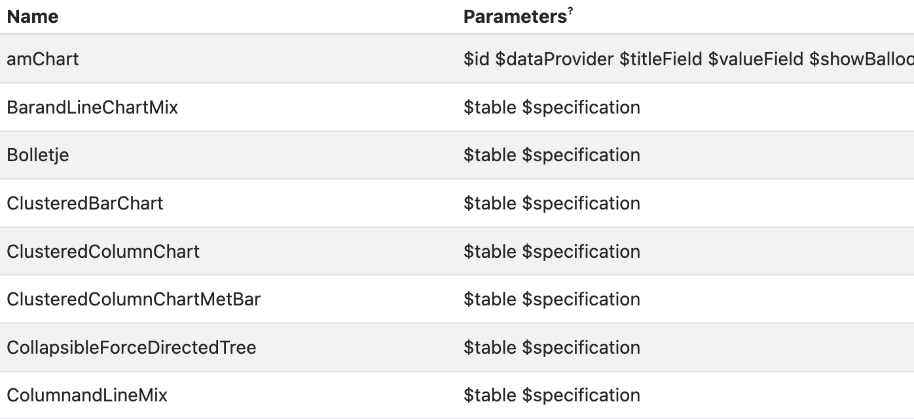
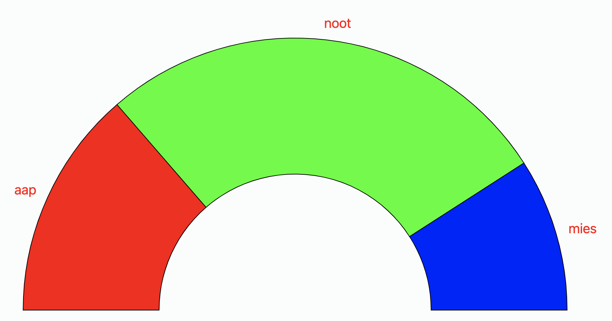
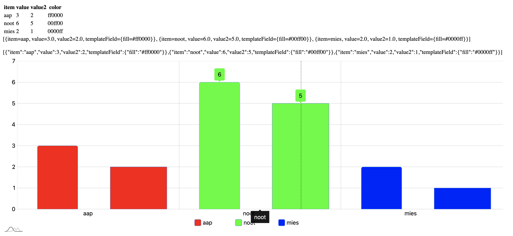

Portfolio werk
Het probleem
Met het eerste idee van de “Feel good”-omgeving was het om het idee alleen op het dashboard te laten zien zodat de klanten kunnen zien hoe goed hun website verloopt. Maar het zou ook zo kunnen zijn dat onze klanten het product ook kunnen gebruiken voor hun klanten. Dus het moet meer dynamisch.
De oplossing
Waar de “Feel good”-omgeving mee wordt gemaakt is met Am charts. Am charts moet in macro’s worden geplaatst zodat de grafieken niet alleen op het dashboard kan worden getoond maar op meerdere plekken.
Het probleem
Met het eerste idee van de “Feel good”-omgeving was het om het idee alleen op het dashboard te laten zien zodat de klanten kunnen zien hoe goed hun website verloopt. Maar het zou ook zo kunnen zijn dat onze klanten het product ook kunnen gebruiken voor hun klanten. Dus het moet meer dynamisch.
De oplossing
Waar de “Feel good”-omgeving mee wordt gemaakt is met Am charts. Am charts moet in macro’s worden geplaatst zodat de grafieken niet alleen op het dashboard kan worden getoond maar op meerdere plekken.
Wat heb ik geleerd?
Met deze opdracht heb ik het meest geleerd. Dat zijn, mijn JavaScript skills en mijn Velocity skills. De manier van werken met verschillende talen door elkaar heen is wel een dingetje. Ik heb veel onderzoek moeten doen om Am chart eenmaal te begrijpen. Onderzoeken voor het beginnen van een project is ook heel erg belangrijk. De manier van programmeren is anders dan op school waardoor dit mij zal realiseren dat het bij elk ander bedrijf ook weer anders zal zijn.
Onderzoeken
Om deze opdracht uit te voeren is het belangrijk dat ik wist hoe Am charts werkt. Zo heb ik hun tutorials gevolgd om te begrijpen hoe hun product werkt. Ik heb voor elke chart die voor ons belangrijk zijn de tutorial gevolgd en aantekeningen gemaakt in de JavaScript.
Dit is 1 voorbeeld van de verschillende charts. Om meer gemaakte aantekeningen te zien, mail naar: xiao.nan.pols@hva.nl
Documenten
Om te weten welke charts voor ons belangrijk zijn, heb ik een lijstje gemaakt van de Am charts die wij gaan gebruiken. Maar na een paar weken hebben wij besloten om alleen de simpelste als eerste uit te werken. Dat zijn: Column, Line en Pie.
DocumentVersie 1
Om te beginnen, zette ik al de grafieken die we zouden gaan gebruiken in een macro. Al deze namen is een macro die wordt meegegeven met paramters.
Ik begon met het maken van een PieChart. Hij staat nu op semi optie. Je kan kiezen voor een Pie, Donut en Semi. Je hebt 3 charts in 1.
Waar ik het meest mee bezig was, was met de XY Chart.
- Regel:
- 1 t/m 3. De JS van Am chart koppelen
- 5 t/m 7. categoryField en valueField specification aanmaken zodat de data kan worden gepakt.
- 8. colorField aanmaken zodat de gebruiker zijn eigen kleuren kan opgeven
- 9. type specification aanmaken zodat je verschillende charts kan kiezen. Bijvoorbeeld: Column en Bar.
- 11. Lijstje maken
- 12. Een foreach waar een mapje in wordt gemaakt zodat de data steeds kan worden gepakt.
- 22 t/m 27. Het uitvoeren van de colorField wordt gedaan. Het wordt zo #${color} geschreven omdat hij dan weet dat het een HEX waarde is.
- 33. JSon date wordt gemaakt zodat de valueField en categoryField data daar vandaan kan worden gehaald.
- 37 t/m 47. Deze code wordt niet gebruikt. Dit is nog van versie 3.
- 53 t/m 58. Hoe groot de grafiek moet zijn wordt hier bepaald.
- 62. De div van de canvas van de html wordt hier geplaatst.
- 70. De div wordt aangesproken
- 72 t/m 74. Animatie wordt toegevoegd
- 76. Er worden opties aan de grafiek toegevoegd.
- 77 t/m 79. Opties voor inzoomen en scrollen van de chart is uitgeschakeld.
- 80. De legenda wordt onderaan de chart getoond
- 84 t/m 85. Als hij op true staat, krijg je een horizontal en verticale lijn te zien wanneer je over de grafiek met je muis hovert. Nu alleen een verticale lijn.
- 87 t/m 92. Weet ik niet meer
- 96. Wanneer je over de staven heen hovert, krijg je een pop-up van het aantal. Dat wordt aangemaakt met toolTip.
- 104. Ruimte tussen de horizontale rasters worden bepaald.
- 108. De eerste staven van de aap noot mies categorieën worden hier aangemaakt.
- 112 t/m 113. De data wordt met de strings aangeroepen.
- 121. De 2e staven van de aap noot mies categorieën worden hier aangemaakt.
- 134 t/m 139. De eerste staven van de categorieën krijgen een border radius.
- 141. Als de colorField is toegepast op de staven, dan zal de if het doen. Anders zal de else het doen. Dan behoudt de grafiek zijn originele Am chart kleuren.
- 170 t/m 173. Met deze lijn zorg je ervoor dat de data zal worden gepakt uit het Test script.
- 175 t/m 182. De legenda onder de grafiek wordt aangemaakt
- Regel:
- 1. Nieuwe clazz wordt aangemaakt
- 2 t/m 5. item is voor categoryField, value is voor valueField. Value2 is voor valueField2. Color is voor het hebben van een colorField
- 7. Table wordt geplaatst zodat record van die table kan worden gehaald.
- 8 t/m 12. Voor individuele data wordt er een record bij gehaald, een item (categoryField), de value in dit geval 3 en 2. En als laatste de kleur van de staaf.
- 29 t/m 34. Als deze dingen hier niet staan dan werkt het niet
- 36. De juiste macro naam voor het laten zien op het scherm. Als er #PieChart staat i.p.v. # ClusteredColumnChart dan laat hij de PieChart macro zien en niet deze.
Versie 2
- Regel:
- 6 t/m 8. Deze komen te vervallen omdat deze in de foreach komen. Type specification wordt een serieslist.
- 10. Deze wordt een serieslist omdat er meerdere series kunnen worden geplaatst.
- 11 t/m 12. Er is een x en y label omdat er een lijstje met data vanuit de json vandaan moet worden gehaald. Dan moet de juiste labels geplaatst worden op de juiste assen.
- 14 t/m 16. Net zoals bij de x en y labels moet er een x en y categoryfield komen omdat ze belangrijk zijn voor het bepalen van de data voor de grafieken. Welke data moet waar precies komen te staan?
- 18 t/m 19. Gebruiker kan kiezen of hij de toolTip over de grafieken wilt hebben als hij er overheen hovert. Ook kan hij kiezen of hij een legenda onderaan de grafiek wilt hebben.
- 20. Gebruiker kan kiezen of er een minimale waarde en maximale waarde moet komen te staan bij de grafiek.
- 23 t/m 24. Hier wordt min en max individueel aangemaakt voor de specification.
- 26 t/m 28. Er wordt een variable aangemaakt voor het instellen van de labelText, legendText en toolTip.
- 29 t/m 30. Er wordt een variable aangemaakt voor het instellen van de grootte van de grafiek.
- 32 t/m 42. Wat er moet worden getoond als default wordt aangemaakt.
- 44 t/m 50. Wat de default maten moeten zijn wordt hier aangemaakt.
- Regel:
- 53 t/m 63. Als je een minimale waarde instelt en je hebt een – getal in je grafiek, zal je grafiek niet goed werken. Daarvoor is deze code. Allen als er een minwaarde is zal deze code werken. Anders niet. Dan kan je gewoon een minimale waarde invullen
- 71 t/m 90. De juiste x of y label wordt bij de juiste x of y categoryfield toegevoegd
- 110 t/m 114. Valuefield specification wordt toegevoegd aan de series in serieslist foreach. Zo kan de data in de series komen.
- 124 t/m 126. De gebruiker kan een hex kleur geven met of zonder #
- 129 t/m 137. Wanneer gebruiker een line grafiek heeft, krijgt hij alleen een stroke anders een stroke en een vulling.
- 151 t/m 158. Standaard showTooltip en showLegend wordt hier aangemaakt.
- 196 t/m 201. Er is een heatmap grafiek toegevoegd. Als de gebruiker een heatmap heeft, zijn er geen instellingen voor cursor omdat je over elke single vlak een pop-up krijgt. Dat krijg je niet als je cursor instellingen toepast.
- 203 t/m 208. Instellingen voor de legenda wordt toegepast.
- 210 t/m 237. Er komt een grote if else te staan. In de if stel je in wat er moet gebeuren als de gebruiker een bar grafiek heeft.
- 227 t/m 235. Je stelt in wat er gebeurt als de gebruiker een min en max waarde meegeeft aan de grafiek.
- 239 t/m 265. Instellingen voor de heat grafiek wordt hier aangemaakt.
- 267 t/m 295. Instellingen voor de column grafiek wordt hier aangemaakt.
- 297. Foreach series in serieslist wordt aangemaakt.
- Regel:
- 299 t/m 302. De eerder opgegeven content wordt in de foreach gedaan.
- 303 t/m 305. Als type heat is en er is geen stroke color opgegeven, is de stroke wit.
- 306 t/m 310. Als type line is dan is de seriestype LineSeries. Anders ColumnSeries. Bar, heat en column grafie gebruiken allemaal ColumnSeries.
- 314 t/m 317. Als je 3 categorieën hebt met verschillende waardes en de eerste 2 categorieen of staven wil je op elkaar doen, maar je wilt wel dat er een border-radius om de staven blijven, zal deze if werken. Dan heeft de eerste onderste staaf geen border-radius. Want dat staat niet mooi.
- 325 t/m 336. Hier worden de juiste category en value velden toegevoegd.
- 350 t/m 354. Instellingen voor de showTooltip wordt hier toegevoegd.
- 359 t/m 389. Geen idee
- 401 t/m 413. De if else for each van regel 314 t/m 317. De code wordt hier vastgelegd. If type is bar dan hebben de top right en bottom right corner een radius van 5. Anders hebben de top left en top right een radius van 5.
- 469 t/m 482. Ik denk dat dit code is voor de heatmap voor het hoveren maar weet niet zeker.
- 484 t/m 502. Voor de bar moed andere data komen vanuit de Json file dan voor de heatmap en de column.
Documenten
Om gebruikers (developers) het product te begrijpen, is er een documentatie bij gemaakt. Het geeft in info aan de gebruiker welke in combo gebruikt kunnen worden, wat voor type elke specification is en meer. Hier is het in het engels geschreven omdat CrossmarX zijn gebruikers ook niet Nederlands kunnen spreken.
XY Documentation